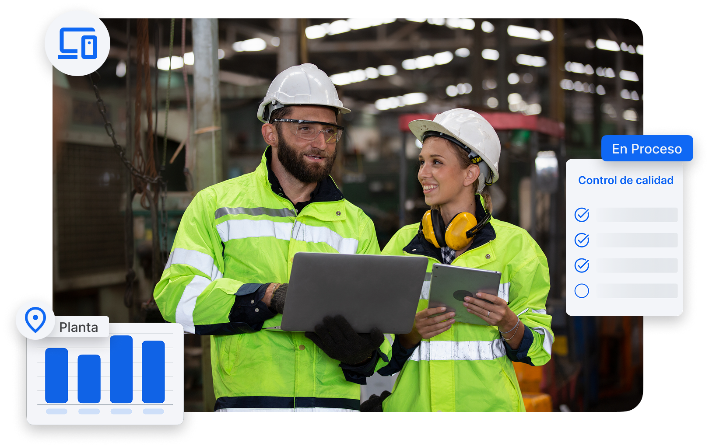
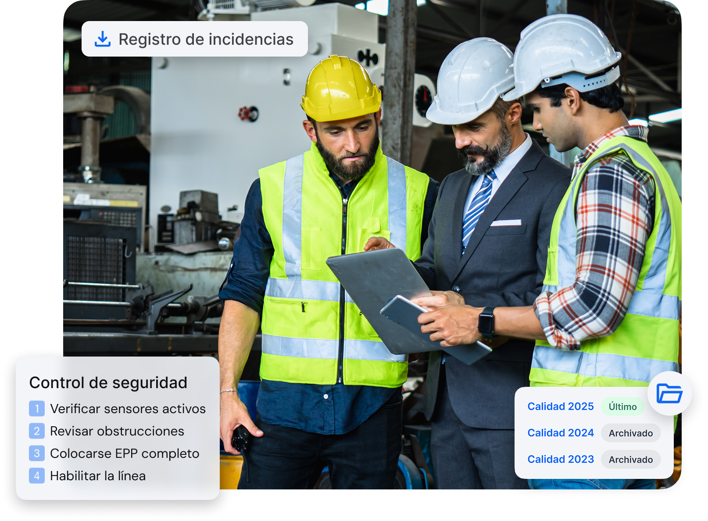

Optimiza la gestión diaria, reduce errores y gana visibilidad con Solved, el software que conecta equipos y estandariza procesos clave en planta.
Solicita tu demo personalizada
Muchas plantas industriales operan con procesos desconectados, registros poco fiables y comunicación informal. Esto no solo ralentiza el trabajo: pone en riesgo la calidad, la seguridad y el cumplimiento.
Procesos documentados en papel o Excel que se pierden, se duplican o no se revisan a tiempo.
Fallos e incidencias que se detectan tarde y no dejan rastro de su resolución.
Mantenimientos mal planificados o ejecutados sin trazabilidad.
Documentación crítica repartida en carpetas, sin control ni acceso sencillo.
Formación no estandarizada que depende de la experiencia del operario anterior.
Solved te permite estructurar las operaciones, reducir errores y fomentar la mejora continua en planta. Sin depender de papel ni de soluciones improvisadas.
